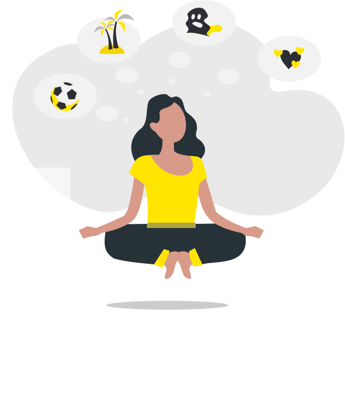
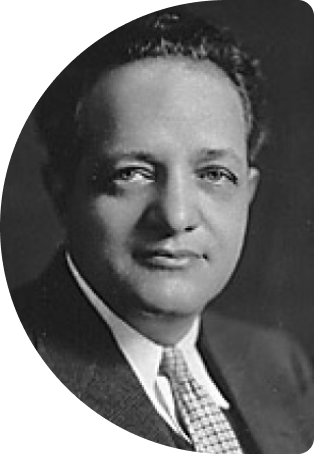

Мои Клиенты
люди, кто чувствует необходимость
Познать свой внутренний мир
- Восстановить связь со своим внутренним ребёнком;
- Разобраться с навязчивыми мыслями и противоречивыми убеждениями;
- Оставаться наедине с собой и не чувствовать себя одиноким;
- Осознать семейные тайны и мифы
- Избавиться от зависимых отношений и перестать видеть свою вину во всем;
- Превращать непереносимый конфликт в простое и понятное решение;
- Понимать окружающую реальность и действовать на основе полученных знаний
Воcпринимать других, не теряя себя
Как проходит встреча?
- Онлайн - Skype, Telegram, Zoom
- Клиент рассказывает о своих переживаниях и трудностях
-
Определяем источник проблемы методом
психодраммы

Психодрама - это психотерапевтический метод, созданный профессиональным врачом-психиатром Я. Л. Морено.
Важное преимущество психодрамы, как уникального целостного метода, является сочетание детальной технологической проработанности с философской и экзистенциальной глубиной понимания сущности человека и его взаимодействия с миром.
Имя Морено стоит в одном ряду с именами З. Фрейда, К. Г. Юнга, К. Роджерса, так велико его влияние не только на психологию и психотерапию, но и на современную культуру в целом.
Находим сложную ситуацию в жизни. Обыгрываем ее с помощью подручных предметов.
- Смотрим взглядом со стороны;
- Спрашиваем: “Что это напоминает?”;
- Делаем выводы -
Результат
Клиент осознает свои истинные желания и по-новому живет в мире с собой и окружающими